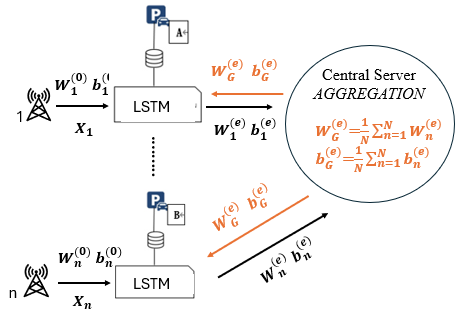
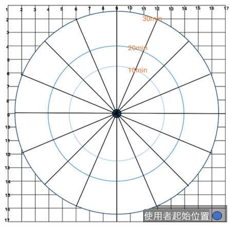
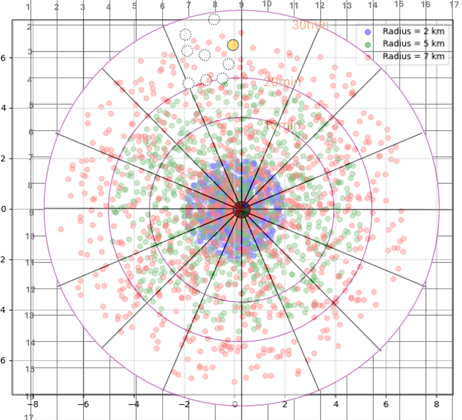
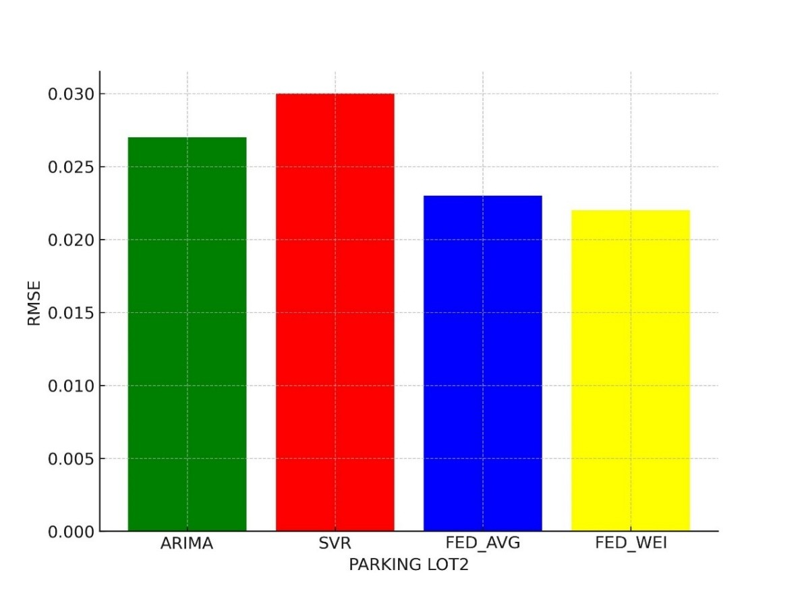
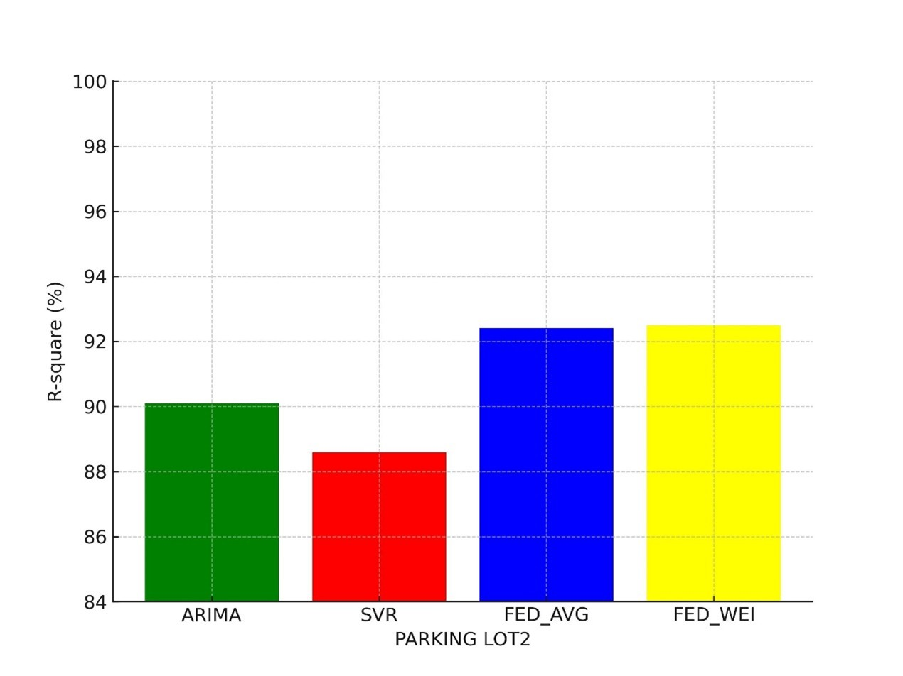
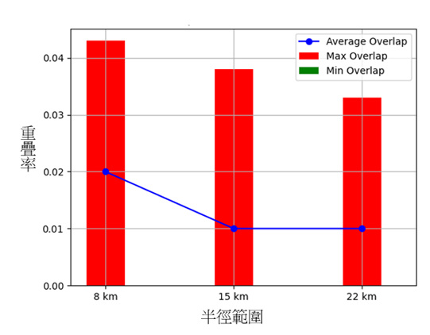

痛點
使用者隱私外洩風險
傳統的停車系統需要上傳精確目的地GPS，存在隱私外洩風險
數據孤島與模型泛化
不同區域的停車場數據分散在各自的本地端。若採用傳統中央集權式訓練，需搬運大量數據；若各停車場分開訓練，則會因數據量不足導致模型精準度低下且無法應對突發狀況。
技術架構與實作
1. LSTM 模型
利用 LSTM 深度學習模型 記住停車場的過往停車資料。系統會抓取過去的空位數據，預測下一個時段的車位狀況，解決找車位困難的痛點。
- 將原始數據轉換為「空餘率」，提升模型泛化能力
- 使用滑動視窗技術，捕捉早晚尖峰、節慶的週期性特徵

2. 隱私數據聚合 (Federated Learning)
實作 「數據不動，模型動」 的聯邦學習架構。停車場在本地端訓練 AI，只將訓練好的模型參數傳回雲端進行聚合，從源頭避免敏感原始數據外洩。
- 手寫權重聚合機制：擺脫大型框架依賴，實現更靈活、高效率的模型更新傳輸。
- 解決數據分佈不均 (Non-IID) 的異質性問題

3. 雙重隱私防禦機制 (Location & DP)
本專案實作了從「使用者端」到「模型端」的全方位保護：
-
第一層：位置模糊
透過時間距離模擬法，將使用者的精確座標模糊化為一個區域，確保伺服器端僅能獲得大致方位。 -
第二層：高斯差分隱私 (Differential Privacy)
模型參數上傳前注入隨機高斯雜訊。即使被竊取了參數，也無法透過數學反推回原始位置。

4. 隱私安全性驗證 (推斷攻擊模擬)
為了量化防禦效果，本專案實作了推斷攻擊模擬。透過計算「使用者真實區域」與「攻擊者推測區域」的重疊率，驗證隱私保護的有效性。
- 實驗證實：在加入模糊化與高斯雜訊後，能有效降低攻擊者的推斷成功率

安全性量化分析與實驗成果
使用 RMSE 確保誤差單位與實際空餘率一致，並透過 R² Score 證實模型對交通趨勢具備解釋力。

RMSE 比較

R²比較
ARIMA、SVR、FED_AVG 以及 FED_WEI 之效能指標比較
經 10,000 次蒙地卡羅模擬測試，證實位置模糊化能有效降低空間重疊率，大幅提升攻擊者的推斷門檻。

不同半徑範圍之重疊率
採用 FedWeighted 演算法，針對不同規模停車場進行權重補償，確保跨場域的模型泛化能力與穩定性。
研究總結與核心貢獻
多層次隱私安全架構
本研究成功整合 聯邦學習 (FL) 與 差分隱私 (DP)，實現「數據不動、模型動」的合作訓練模式。 特別創新之處在於以「時間距離」取代「精確目的地座標」，在不犧牲推薦品質的前提下，從源頭徹底保護使用者的地理位置隱私。
高精準度個人化推薦
透過 LSTM 深度學習模型 擷取停車場空位與使用者行為的長期依賴性。系統不僅能預測未來空位，更能針對使用者對距離的在意度建立模型，提供個人化的建議，有效解決找車位之問題。
相關網址
本研究的所有實作程式碼以及隱私攻擊模擬實驗皆放於 GitHub。
查看 GitHub 完整專案